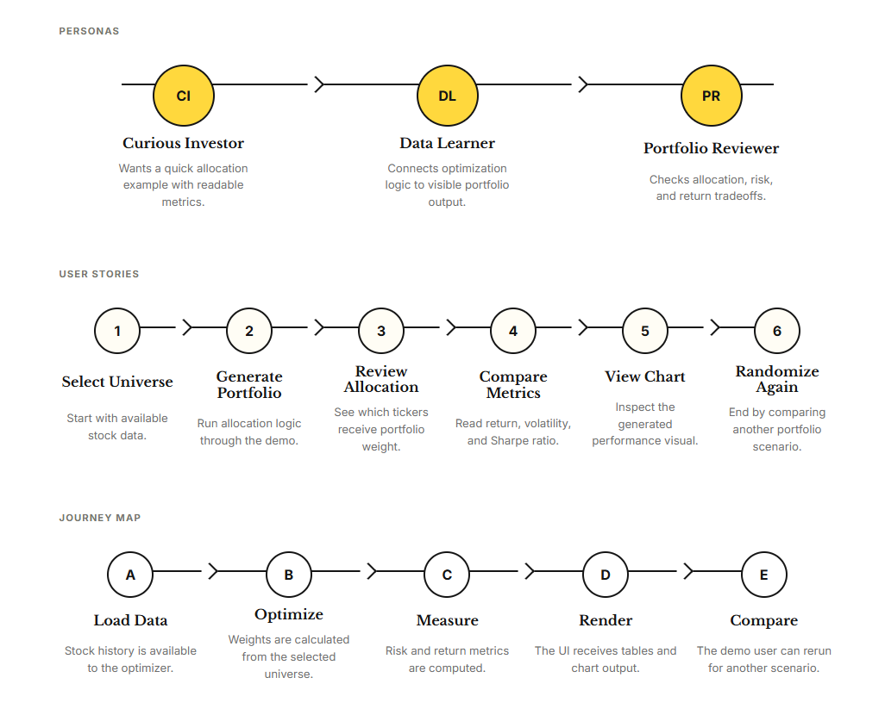
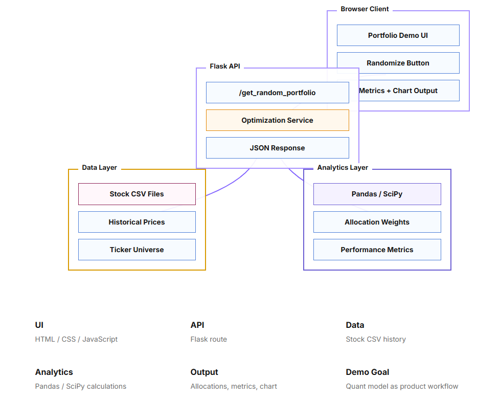

Developing an Interactive Portfolio Optimization Demo
Extending a course based analytical model into a repeatable workflow for allocation, historical evaluation, and visual comparison
Abstract
This project examines the development of a lightweight portfolio optimization demo that extends an analytics course assignment into an interactive financial analysis workflow. The original assignment focused on implementing portfolio optimization logic to satisfy prescribed test cases. The extension addressed a broader usability problem: enabling users to generate, evaluate, and compare multiple portfolio scenarios within one session, without manually specifying a new portfolio for each analysis.
The Python implementation uses NumPy and Pandas to analyze historical market data and SciPy to optimize stock allocations under allocation constraints. Portfolio performance is evaluated through return, volatility, and Sharpe ratio, with Matplotlib visualizations supporting comparison against SPY. A browser interface connected to a Flask API makes the analytical workflow accessible through repeated portfolio generation. The resulting demo connects numerical optimization with an exploratory user experience while retaining the limitations of estimates derived from historical data.
1 Problem Definition and Project Scope
The project originated in an analytics course, where the immediate objective was to implement an optimization procedure that produced outputs consistent with the assignment’s test cases. This provided a foundation for calculating portfolio allocations and evaluating historical performance.
Completing the prescribed calculations also revealed an opportunity to improve how the model could be explored. Manually selecting a portfolio for each run limited the convenience of comparing different stock combinations and examining how their allocations and performance metrics changed. The extension therefore focused on making repeated analysis possible within a single session.
The central design question became: How can a course based portfolio optimization model support repeated scenario generation while keeping allocation decisions, performance metrics, and historical comparisons understandable to the user?
The scope remained a lightweight educational demo. Its purpose was to support investigation of allocation and return risk relationships, with the interface providing a practical way to explore the model’s outputs.
2 User Perspectives and Interaction Requirements
Three illustrative user perspectives informed the interaction design. A curious investor seeks a quick allocation example with readable metrics. A data learner wants to connect optimization logic to visible portfolio outputs. A portfolio reviewer examines allocation, risk, and return trade offs. These perspectives describe intended uses of the demo rather than findings from a formal user research study.
The workflow translates these needs into a sequence of analytical actions: establish the available stock universe, generate a portfolio scenario, review its allocation weights, compare performance metrics, inspect the chart, and generate another scenario. Repetition is central to the experience because the analytical value comes from examining differences across portfolios, rather than viewing one isolated result.

Figure 1 User perspectives, interaction sequence, and analytical journey for the portfolio demo. The diagram connects scenario generation with allocation review, metric comparison, visualization, and repeated exploration.
This design separates scenario generation from weight optimization. Generating another scenario provides a new portfolio to examine; optimization then determines allocations within that scenario under the model’s constraints. The randomization interaction should therefore be understood as a mechanism for exploring different inputs, rather than evidence that an individual optimized allocation is random.
3 Analytical Method: Estimation and Constrained Optimization
Historical stock data provide the empirical basis for the analysis. NumPy and Pandas support the calculation of sample means, variances, and covariance matrices. Sample mean returns summarize observed average performance, while variances describe the dispersion of individual asset returns. Covariances capture how asset returns move together, making them relevant to the risk of a combined portfolio.
Portfolio weights determine each stock’s contribution to the allocation. Estimated portfolio return depends on the weighted asset returns, while portfolio variance depends on both the weights and the covariance matrix. Consequently, portfolio risk cannot be interpreted solely by examining each stock independently: the relationships among assets also affect the combined result.
SciPy is used to optimize the allocation weights with the objective of maximizing the Sharpe ratio under allocation constraints. The Sharpe ratio expresses excess return relative to return volatility. Its interpretation depends on the return frequency, the risk free rate convention, and consistent treatment of those quantities throughout the calculation.
The optimization objective is based on estimated quantities. An allocation that maximizes the objective for a particular historical sample is therefore optimal with respect to those inputs and constraints. It does not establish that the same allocation will remain optimal when market conditions or the estimation period change.
4 Implementation: Connecting the Model to an Interactive Workflow
The implementation connects four functional areas: the browser interface, a Flask API, a historical data layer, and an analytics layer. The interface uses HTML, CSS, and JavaScript to expose portfolio generation and present the resulting allocations, metrics, and chart output.

Figure 2 Architecture of the interactive portfolio demo. The browser client connects to a Flask API, which links historical stock data with an optimization service and returns portfolio outputs for display. The diagram identifies the data, analytics, and presentation responsibilities supporting repeated analysis.
The architecture identifies a Flask route, /get_random_portfolio, as the connection between the browser interaction and the optimization service. Stock CSV files supply historical prices and the available ticker universe. The analytics layer uses Pandas and SciPy to calculate allocations and performance metrics, and the API returns a JSON response for presentation in the browser. Matplotlib supplies the performance visualizations used in the analysis.
This structure extends the computational assignment into a user facing workflow. Users can move from generating a scenario to interpreting its outputs and requesting another scenario within the same session. The interface makes the model easier to investigate by placing allocation weights, summary metrics, and visual results within a consistent interaction sequence.
5 Historical Evaluation and Interpretation
Historical simulation and backtesting are used to examine the behavior of generated allocations over observed market data. Return, volatility, and Sharpe ratio provide complementary summaries: return describes observed performance, volatility describes its variability, and Sharpe ratio relates excess return to that variability.
Comparison with SPY provides a reference for interpreting the portfolio’s empirical performance. Meaningful comparison requires a common evaluation period and consistent return calculations. The charts support inspection of relative performance and estimated return risk trade offs, while the numerical metrics provide summaries that can be compared across scenarios.
Repeated portfolio generation expands the range of examples available for inspection, but it does not by itself establish model robustness. If allocation weights are estimated and evaluated on the same historical observations, the reported performance is in sample. Stronger evidence of generalization would require a separate evaluation period or a systematic procedure that estimates weights using only information available before each evaluation interval.
The outputs also reflect estimation uncertainty. Sample means and covariance estimates may change across periods, and the resulting weights can be sensitive to those changes. Observing variation across generated portfolios helps expose differences among scenarios; establishing statistical bias or sampling variability would require a more structured evaluation design. Transaction costs, rebalancing rules, and other trading assumptions would likewise need explicit treatment before historical results could support claims about practical investment performance.
6 Conclusion
The project extended an analytics course assignment into an interactive demo for generating and examining multiple portfolio scenarios. The course component supplied the optimization foundation, while the extension connected scenario generation, allocation review, performance measurement, and visualization within one repeatable workflow.
The principal contribution was the translation of a numerical model into an accessible analytical experience. Users can inspect how changes in portfolio composition relate to optimized weights and historical performance, using SPY as a comparison reference. The project also illustrates the importance of distinguishing a model’s estimated objective from its empirical evaluation: useful visualizations and favorable historical metrics support exploration, while conclusions about future performance require additional validation.